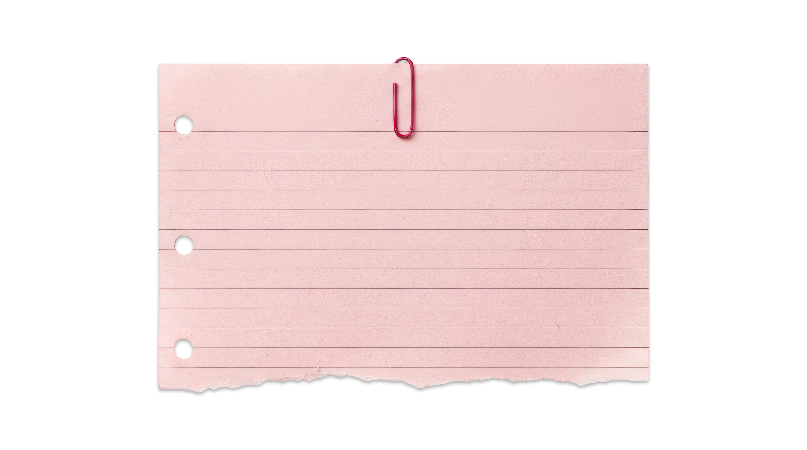
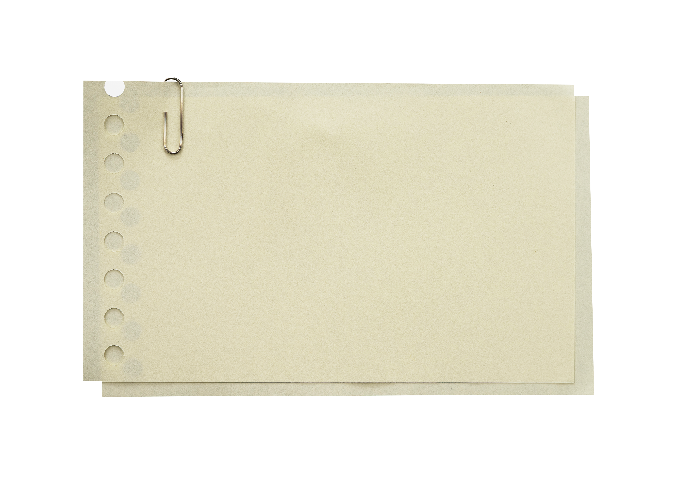
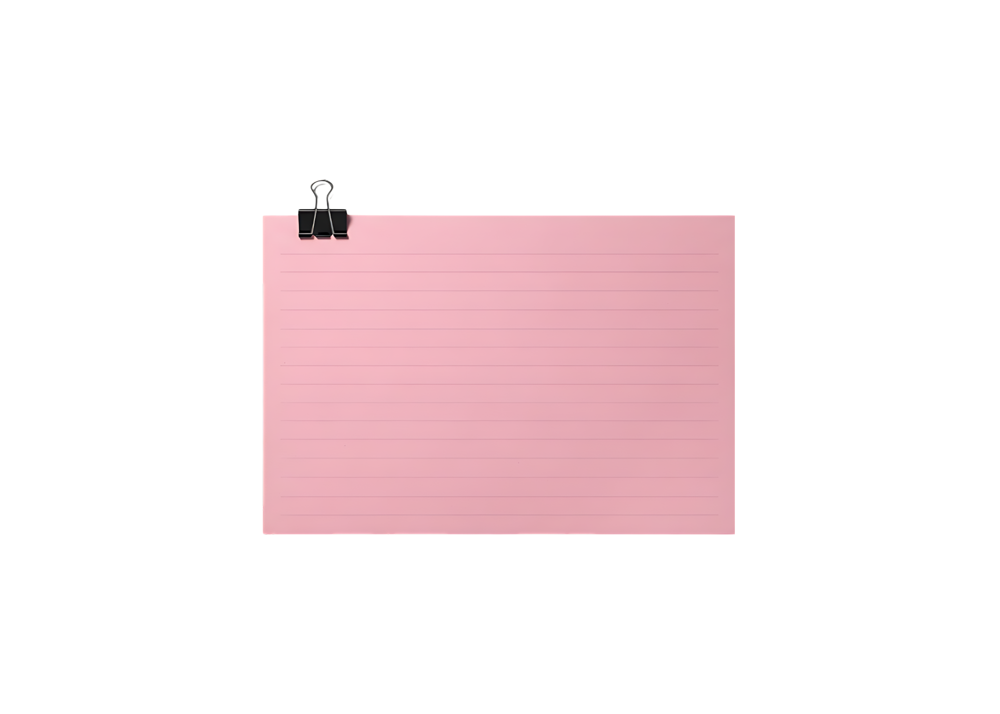
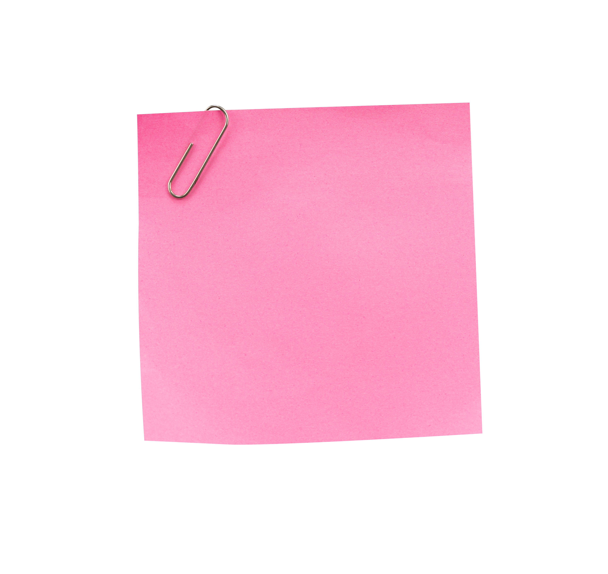
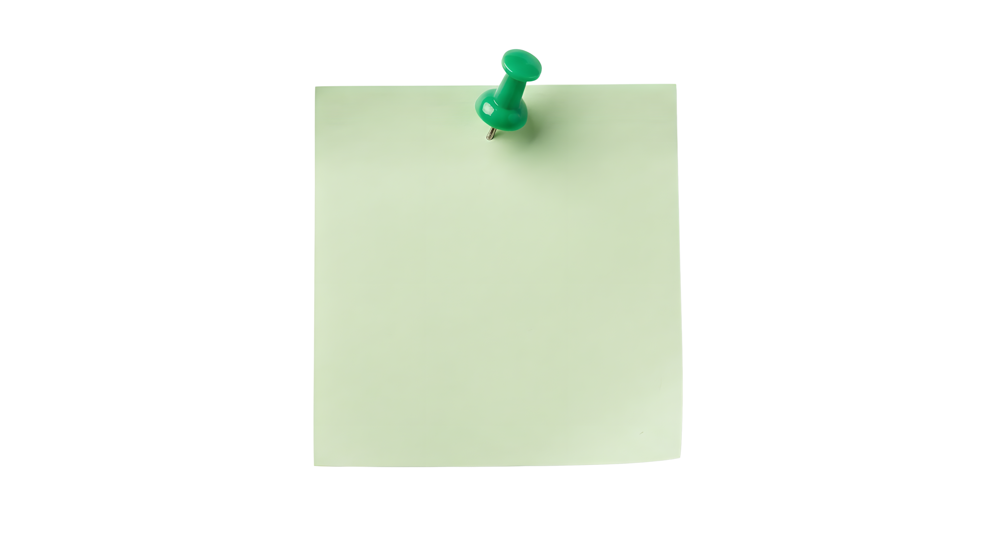
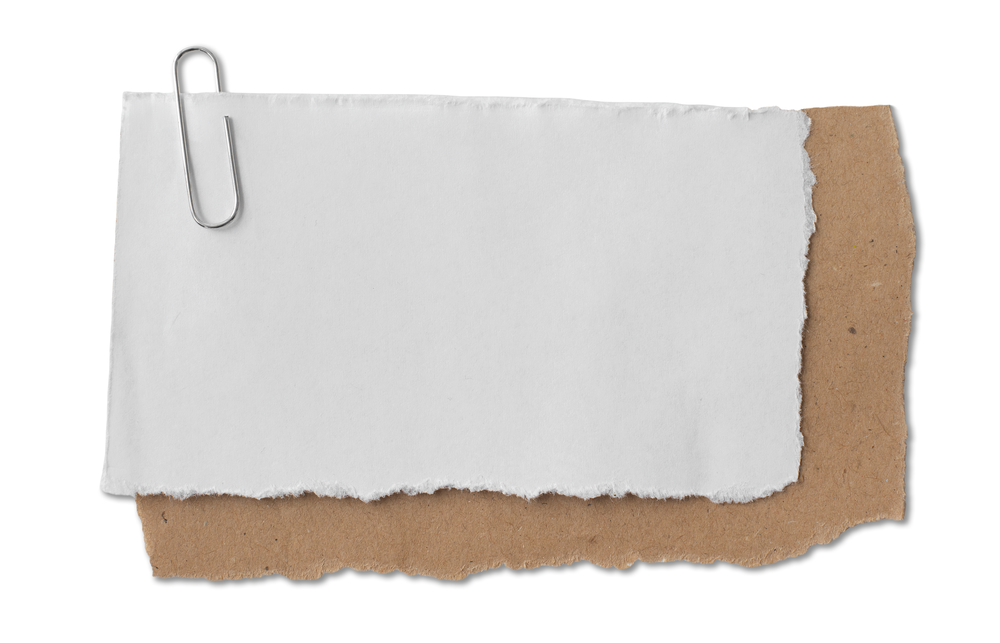

interactive media
assignment 1
linh nguyen
→

What was the first thing you paid attention to when interacting with the experience?
The first thing I paid attention to was the text animation that played upon the website loading, because it is the most distinct. It is large and takes up a high proportion of the screen, and it stands in contrast to a solid blue colour background where there is a lot of negative space. Additionally, the random letter reveal effect adds dynamism and caught my eye immediately.

Spend two minutes with the experience and create a list of each of your discrete actions.
Upon the website loading, I first watched the initial loading animation play and scrolled through Rich Brown’s written introduction until I progressed to the main part of their portfolio with examples of their work. Because of the novel and interactive nature of their website I was compelled to scroll up and down to play with the asset animation and move my mouse around as even small mouse movements over certain areas such as the rectangular assets produce visual effects such as the background changing or the mouse increasing in size. This led me to click on the assets for some websites which led me to another webpage with further examples of the website’s design elements and a written description about the website and Rich Brown’s participation in it. After reading through some of the description I could easily return to the main page by clicking the R letter in the top left, repeating the process with the next few website examples in the portfolio until I could no longer scroll horizontally and had reached the end.

What part of the experience did you spend the most time engaging with?
I spent the most time engaging with the main body of the website, which is a continuous slide segmented into examples of different projects Rich Brown worked on as represented by a title and a rectangular asset. This takes the most amount of time to scroll through because it takes up the most area of the main page, but within each asset there is more information linked on another page which takes more time to read.

What was the most common action in your two minute interaction with the experience?
The most common action within the interaction was scrolling as the website was designed for scrolling to be the primary action needed to access information and move between one point and the next, minimising the clicking needed. By only scrolling, it was possible to view the loading animation and reach all the way to the end of the portfolio while still being able to see the previews of each major example of Rich Brown’s work.

What is your impression of the intended primary goal of the interactive experience?
The intended primary goal is to showcase the professional work and expertise of Rich Brown, an UI/UX designer, and act as their digital portfolio by providing evidence of their work while also being designed in a way that provides evidence of their skill. This website is likely used for them to market their expertise to possible employers or customers and encourage them to purchase their services, advertising the high level of quality and detail in their work. This is explicitly expressed in Rich Brown’s introduction, but also through the playful user experience that this website offers where even hovering over certain bars or tabs produces dynamic animation.

How does the interactive experience communicate this primary goal?
It is explicitly expressed in Rich Brown’s introduction, but also through the playful user experience that this website offers where even hovering over certain bars or tabs produces dynamic animation. The advanced website animations and UI indicate a high level of technical skill from the designer, that they are able to form creative and unique user interactions from simple actions such as scrolling, clicking, and hovering. Even the cursor is reactive to the website and instead of being a standard cursor is a circle that expands when hovering over hyperlinks, really exemplifying Rich Brown’s innovative design approach and technical skill.

">What is your impression of how the experience should be interacted with over time? (For how long and how many different times)
It appears that the experience should be interacted with for at least 10 minutes as there can be dense chunks of text for users to read (because the function of the website is to explain Rich Brown’s abilities and the services they are able to offer as well as display them, and inform users of the part they played in each work). The interactive experience suggests that I should scroll upwards with the trackpad to keep scrolling to the right through the website, because that was the only trackpad movement that would allow me to progress forwards. The experience also directed me to click on certain

How does the interactive experience communicate how it should be interacted with over time?
Upon the loading of the website, a written introduction about Rich Brown appears after the initial animation of their name, however because you need to enter new web pages by clicking on the screen recordings of websites to read information about Rich Brown’s design process on those websites.

What other media forms (digital or otherwise) does the experience reference?
The intended primary goal is to showcase the professional work and expertise of Rich Brown, an UI/UX designer, and act as their digital portfolio by providing evidence of their work while also being designed in a way that provides evidence of their skill. This website is likely used for them to market their expertise to possible employers or customers and encourage them to purchase their services, advertising the high level of quality and detail in their work. This is explicitly expressed in Rich Brown’s introduction, but also through the playful user experience that this website offers where even hovering over certain bars or tabs produces dynamic animation.

What does this reference/s communicate to you about how you should act when engaging with your research experience?
The references of different videos of Rich Brown or his examples of his commercial projects through video recordings of websites and apps communicate to me that they are the core parts of the website because Rich Brown leaves a large amount of negative space around each recording save for a title relating to each corresponding project. Additionally hovering near or over these references results in various visual effects: a squish animation, the cursor circle expands, the background colour darkens, and a picture in picture icon appears. Combined, these add extra emphasis on the references that there is a lot more information to be found in these references and they are the core of how Rich Brown is representing himself within this website.
What does this reference/s communicate to you about how you should feel when engaging with your research experience?
This reference uses various design techniques and clearly demonstrates the best of Rich Brown’s skill, with the purpose of leaving a good impression on the user and compelling them to see Rich Brown as a well-experienced art director and UX/UI designer who has worked on notable projects and specialises in a ‘innovative’, ‘human-centric’ art style and is able to think innovatively about all the different ways an user can engage with a website. The references are screen recordings of the websites and not just screenshots to demonstrate that Rich Brown is able to design interesting and animated websites that feel satisfying to scroll through and incorporate lots of unique movement and visual effects.

What is the most frustrating part of the interaction to you and what makes that part frustrating?
The most frustrating part of the interaction was having to continually click through the website to access each part of Rich Brown’s portfolio instead of being able to read through it all by simply scrolling (like a traditional portfolio). The website is designed so artfully to really amplify Rich Brown’s skill in art direction, however this results in a large amount of possibly unnecessary visual stimuli such as the mouse trail animation and moving tiles and assets. This can be distracting and overstimulating especially for users like me that prefer limited movement and motion if we are spending a prolonged amount of time on a website reading information.

What is the most satisfying part of the interaction to you and what makes that part satisfying?
The most satisfying part of the interaction was the animations as they were very fluid and dynamic, bending, squishing, and following the movements of my mouse and scrolling and thus making a digital experience feel organic and unlike the standard user experience. For example, scrolling through rectangular assets and images causes them to slant, and the amount at which they slant is directly proportional to my scrolling speed, which creates a feeling of interactivity.
Image credits: ©Adobe Stock